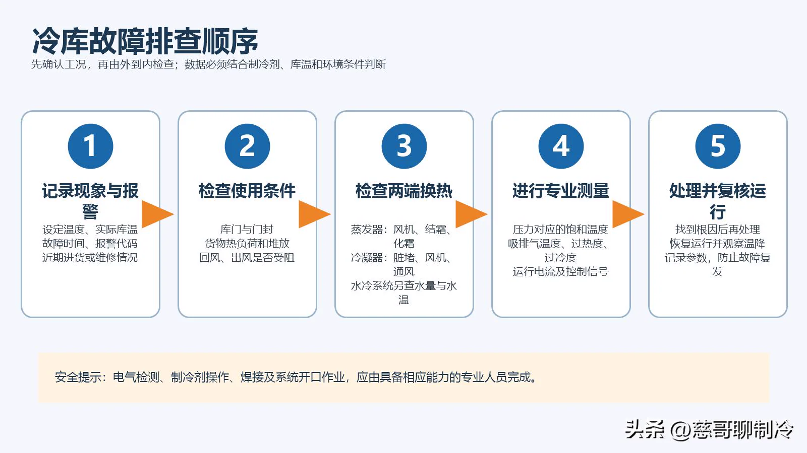

冷库温度降不下来，不少人的第一反应就是“是不是缺制冷剂了”。但从现场维修经验看，库门没关严、蒸发器结霜、冷凝器太脏、风机停转、控制参数不合适，都可能出现类似表现。
一、动手检查前，先把情况问清楚
同样是“温度降不下来”，刚进了一批高温货物和空库运行时的判断完全不同。到现场后，建议先确认：
- 冷库原来运行是否正常，故障是突然出现还是逐渐加重？
- 近期是否大量进货、频繁开门或调整过温控参数？
- 机组是否维修过，是否补充或更换过制冷剂？
- 控制器有没有高压、低压、过载或缺相报警？
- 压缩机、冷凝风机和蒸发器风机是否都在运行？
- 故障发生时的环境温度、库内温度和货物温度分别是多少？

二、压缩机不启动，先查控制链路
压缩机不启动，并不等于压缩机已经损坏。先看控制器是否有制冷输出、接触器是否吸合，以及机组是否处于高低压、过载、缺相或排气温度保护状态。
- 主电源、控制电源或保险熔断；
- 温控器没有输出制冷信号；
- 温度探头损坏或显示失真；
- 高低压保护、热保护或相序保护动作；
- 接触器线圈、控制线路或接线端子异常；
- 压缩机内部保护尚未复位；
- 压缩机电机或机械部分故障。
三、机组一直运行，库温却降不下来
这是最常见的一类问题，建议按“热负荷—风量—散热—供液—压缩机能力”的顺序进行。
1. 先排除使用条件问题
检查库门、门封和开门频率。刚入库的货物温度高、数量大，也会延长降温时间。货物不能堵住蒸发器回风口和出风通道，还要观察保温板接缝、库门周边和穿墙管道是否漏冷。
2. 检查蒸发器换热
积灰、油污、厚霜、风机停转或风道受阻都会降低换热能力。如果只有蒸发器入口附近结霜、后面大面积干燥，通常说明供液不足，但原因也可能是过滤器、膨胀阀或电磁阀节流堵塞，不能直接认定缺制冷剂。
3. 检查冷凝器散热
风冷系统检查翅片、冷凝风机和热风回流；水冷系统检查水温、水量、水泵、过滤器和冷凝器结垢。
4. 再检查制冷系统
外部条件正常后，再结合制冷剂类型、库温、环境温度和负荷，测量压力、温度、过热度、过冷度及电流。压力不能脱离工况谈“统一正常值”。
四、冷库高压报警怎么查
高压报警通常意味着冷凝侧热量排不出去，或者高压侧存在异常。依次检查冷凝器脏堵、风机、水量与水温、通风热回流、高压阀门、充注量、不凝性气体及压力传感器。
五、冷库低压报警怎么查
先确认冷库是否已经达到设定温度。若库温仍偏高，可重点检查：
- 蒸发器严重结霜、风机不转或货物遮挡回风；
- 电磁阀未完全开启；
- 干燥过滤器、膨胀阀或供液管路堵塞；
- 膨胀阀选型、调节或感温包安装异常；
- 制冷剂泄漏导致供液不足；
- 冬季冷凝压力过低，供液压差不足；
- 低压传感器、压力开关或参数异常。
发现制冷剂不足时，应先找漏点，修复后保压、抽真空，再按设备要求定量充注。只补不修，故障还会出现。
六、压缩机或回气管结霜严重
回气管轻微结露或结霜不一定是故障。如果霜层延伸到压缩机壳体，并伴随声音异常、油位波动或排气温度偏低，要警惕回液。常见原因包括膨胀阀供液过大、感温包异常、蒸发器风机停转、化霜后启动时序不合理，以及负荷或参数变化。
七、频繁启停或长时间不停机
频繁启停要检查温控回差、探头位置、电源和接触器、高低压保护、冷凝风机、供液稳定性以及机组选型。长时间不停机，则要区分是真降不下来还是探头显示错误，并重新核对当前负荷是否已经超过原设计工况。
八、库温波动大，不能只调控制器
检查探头是否靠近库门、出风口或货物表面，货物是否影响空气循环，开门是否频繁，以及化霜温升是否合理。控制器显示温度、库内空气温度和货物中心温度变化速度不同，不能用一个瞬时读数代替货物实际温度。
九、哪些项目可以先自查
- 温控器设定和报警信息；
- 库门是否关严，货物是否堵住风道；
- 风机是否运行，蒸发器是否严重结霜；
- 冷凝器是否脏堵，设备周围是否通风不良；
- 管路接头周围是否出现异常油迹。
十、现场排查最重要的是顺序
先问运行变化，再看控制报警；先查库门和风量，再查蒸发器与冷凝器；外部条件正常后，再测压力、温度、电流和过热度等参数。
单独一个压力、一个温度或一处结霜，通常不足以确定故障。把故障现象、运行工况和测量数据放在一起分析，往往比凭经验猜故障更快，也更安全。
本文由阿杰原创，原载于今日头条「阿杰聊制冷」。查看原文